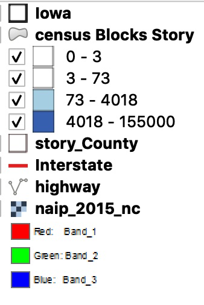
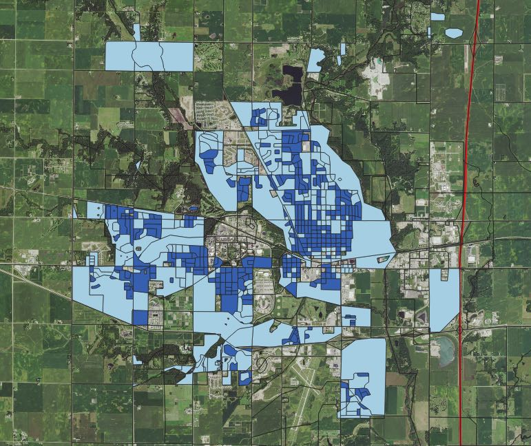

  This map showcases the population density in the city of Ames, IA. As you can see, the majority of the population is located surrounding Iowa State University and along the major roads in the city.